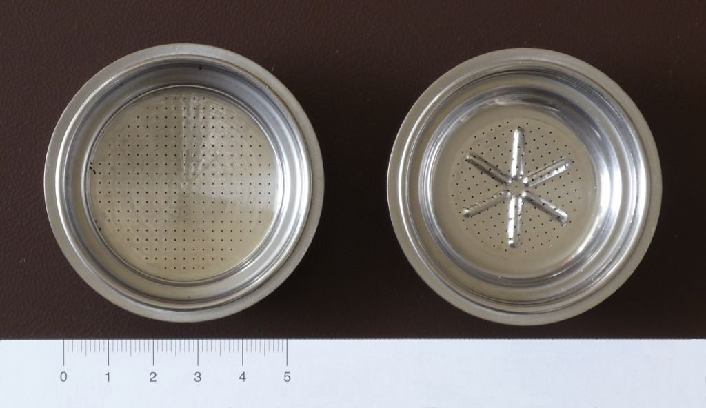
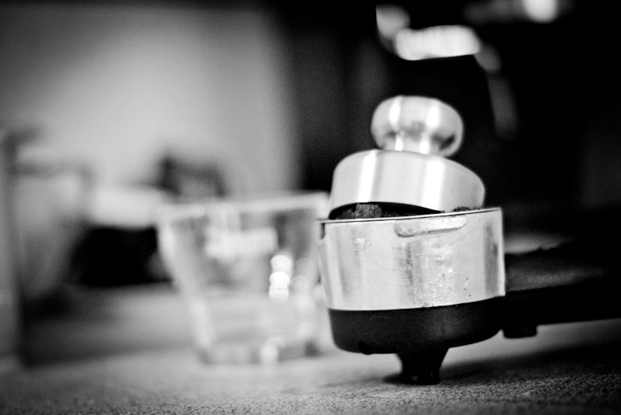

焼戻し色 5段階め ・ 青
アクセス
お店の場所と連絡先です。営業時間は準備中です。
所在地
香川県観音寺市茂木町４丁目６−１３
〒768-0069
| 所在地 | 〒768-0069 香川県観音寺市茂木町４丁目６−１３ |
|---|---|
| 電話 | 0875-25-1384 |
| 営業時間 | 準備中 |
| 定休日 | 準備中 |
| ご予約 | 準備中 |
| 駐車場 | 準備中 |
| SNS | Instagram @yamaya_steel_coffee |
イメージ写真
フィルターのイメージ。
お店の写真ではありません。撮影地不明のフリー素材です。

